Créateur fashion · TikTok & Insta
· Création de contenus fashion avec mon frère jumeau.· Collaborations commerciales avec les marques.
Résultats clés :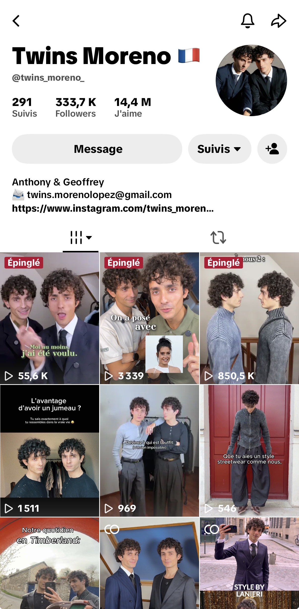
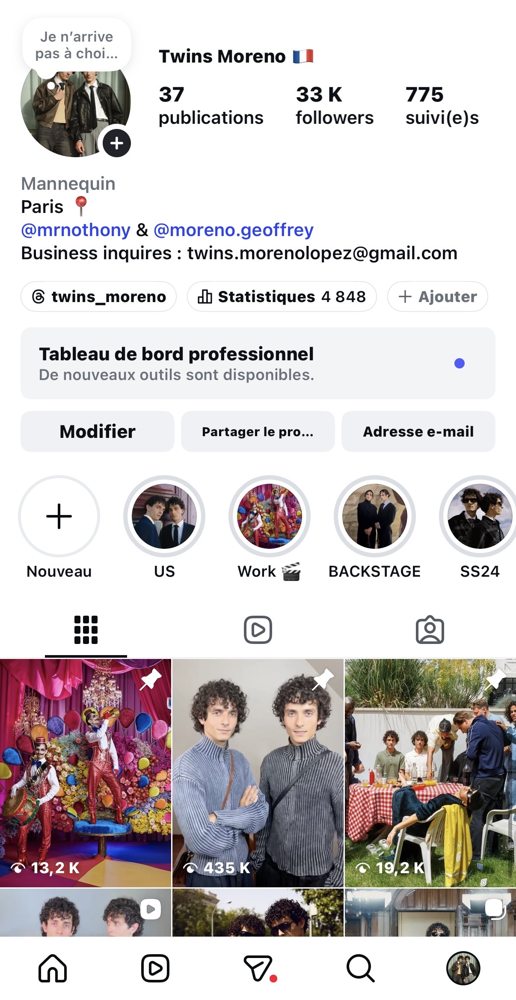
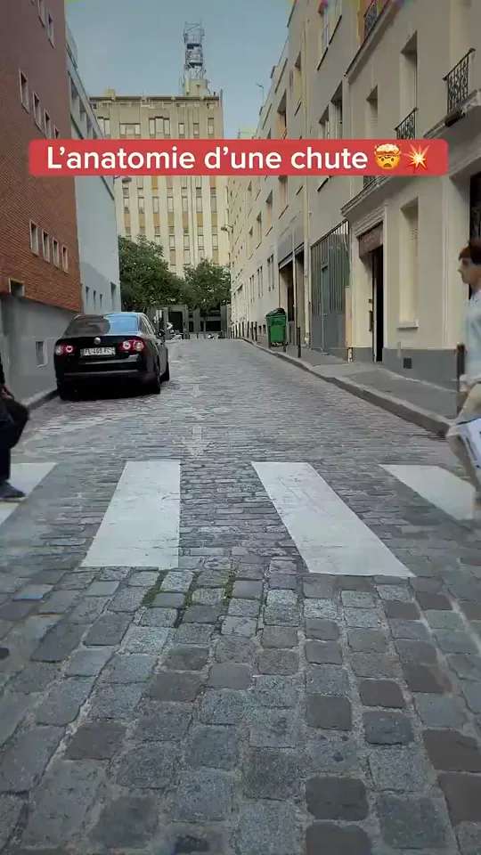
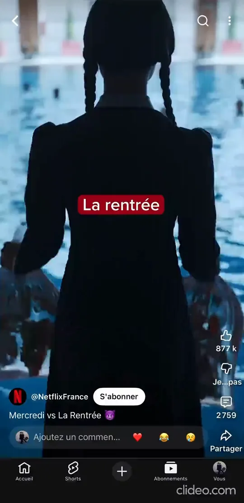
Elles m'ont fait confiance
(+ 40 marques accompagnées)
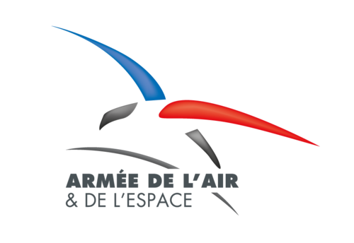
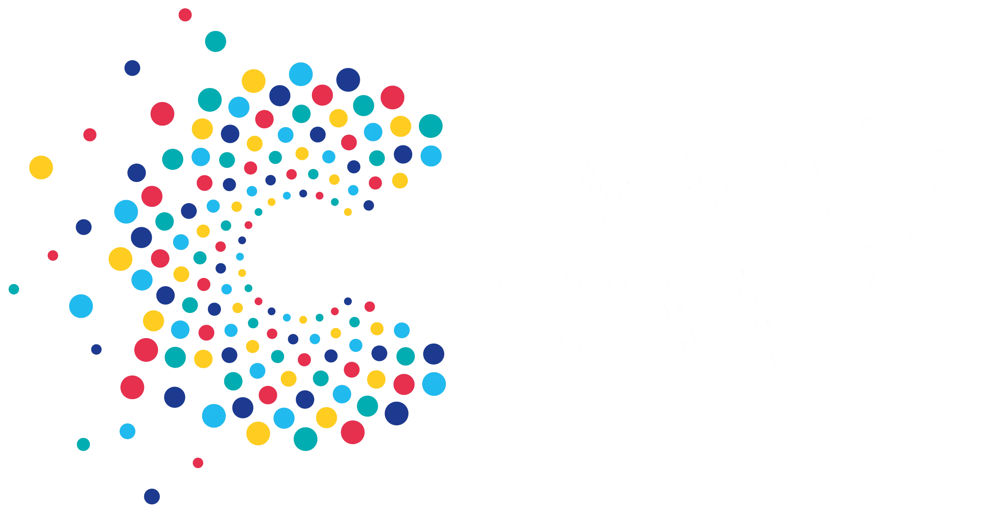
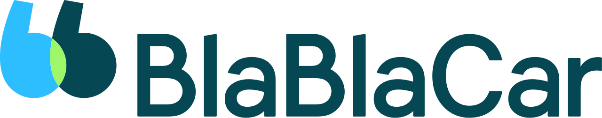
Mes Projets
( ADS, ORGANIQUES, INFLUENCE )


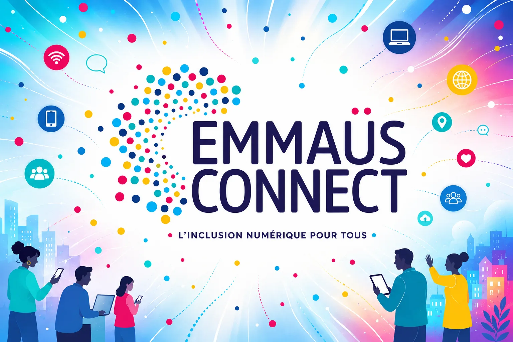


Mon Parcours
· Création de contenus fashion avec mon frère jumeau.· Collaborations commerciales avec les marques.
Résultats clés :

· Pilotage de stratégie créative, d'influence et de production de contenus pour les marques sur TikTok, Reels, Shorts.· Développement et lancement du compte TikTok de NetflixFR.
Résultats clés :
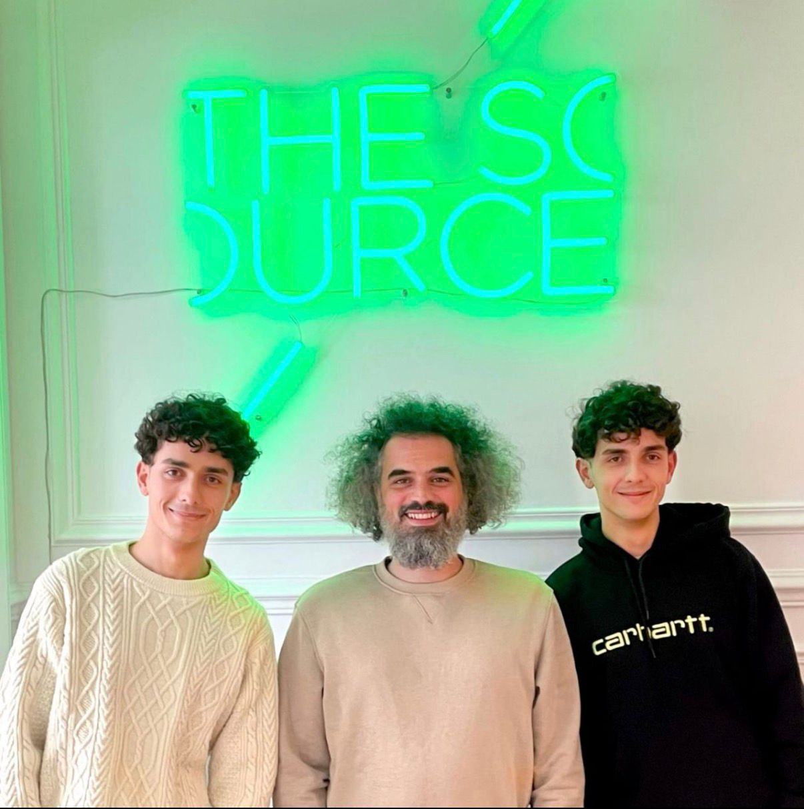
· Immersion à l'étranger pour renforcer mon anglais, mon autonomie et ma capacité d'adaptation.
Résultats clés :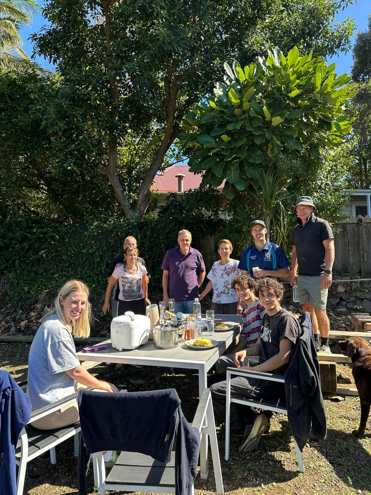
· Shootings, campagnes publicitaires et défilés pour les marques de mode.
Résultats clés :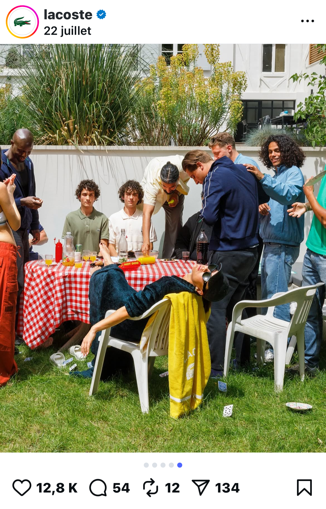
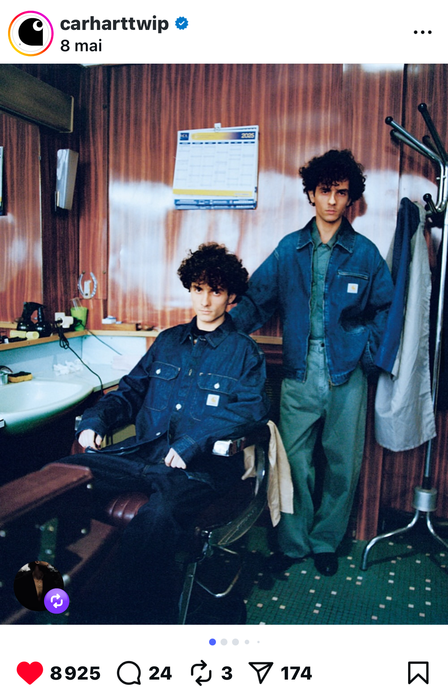
Me contacter